About us
Two Master Scuba Divers, one logbook
Doolittle Scuba is Eric and Allie Doolittle, a husband and wife raised in Augusta, Georgia, now diving out of Newnan. Both hold the PADI Master Scuba Diver rating. Both plan their travel around what is under the water.
The line is the logbook, drawn. Every plate on a Doolittle Scuba shirt is a site we have dived: the Gulf wrecks off Panama City Beach, the springs of north Florida, the quarries and lakes closer to home, and the far ones, the Red Sea, Raja Ampat, Bali and Fiji. Charts and park maps are reference only. The depths, the landmarks and the things worth labelling come from having been there.
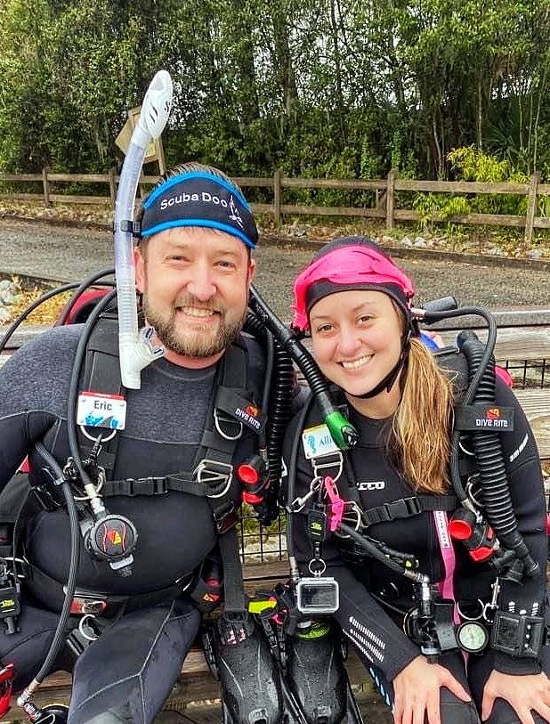
It is a two-person operation, and we like it that way. Eric draws every plate by hand and the shirts are printed by hand in small runs. Allie runs everything that turns a drawing into a shirt at your door, and nothing goes to print until she has checked it. We are not instructors and we are not a dive shop. We are two divers with a drawing table and a small print setup at home.
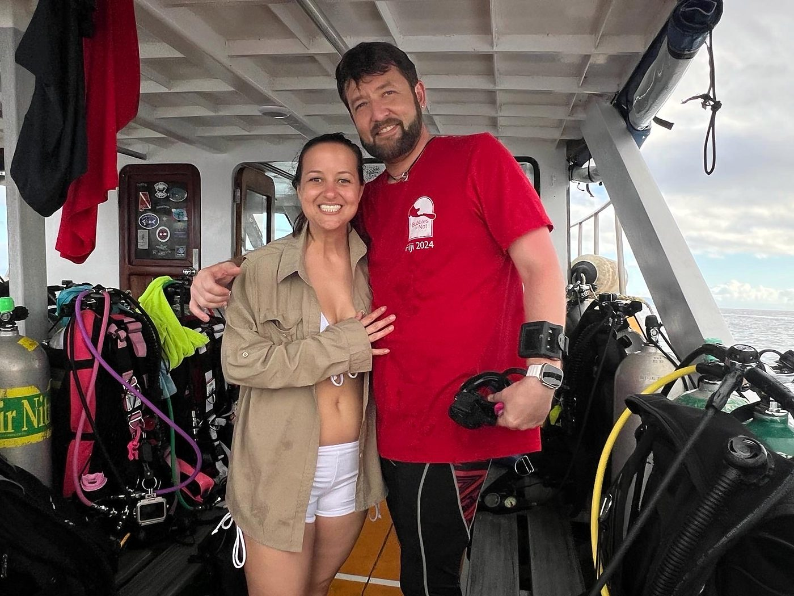
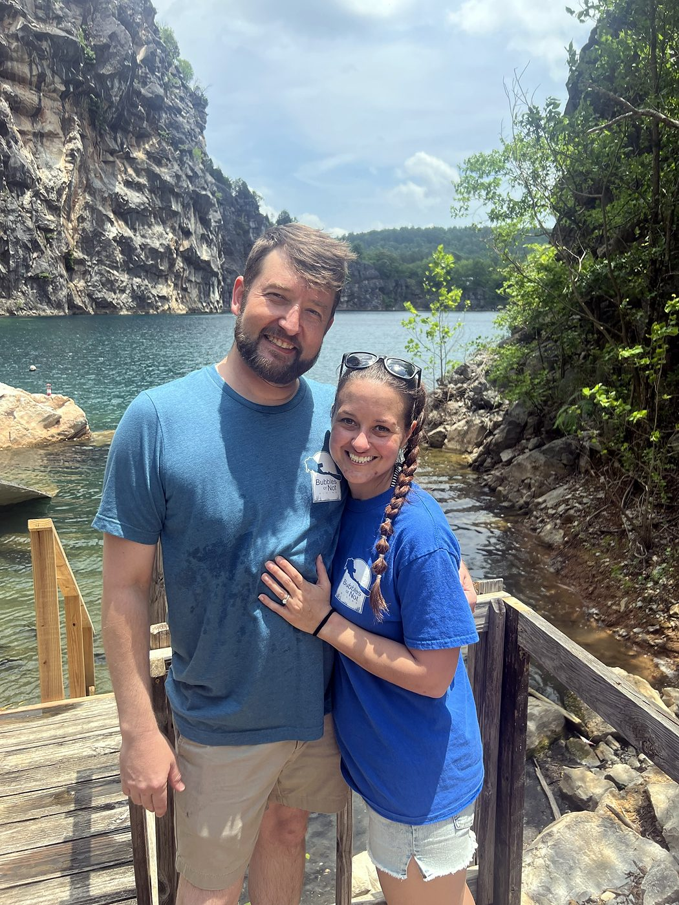
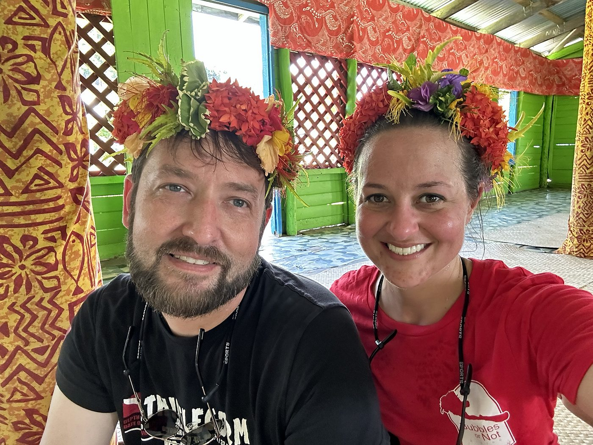
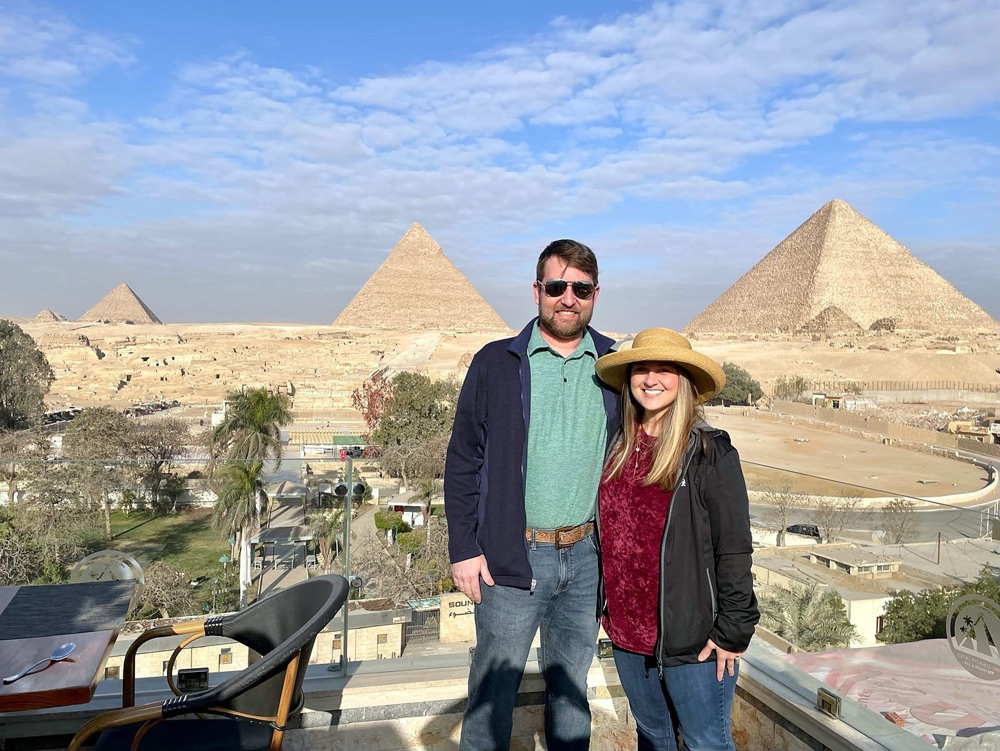
- Home port
- Newnan, Georgia
- Raised
- Augusta, Georgia
- Ratings
- PADI Master Scuba Diver, both
- The line
- 15 dive-site plates, every one a site we have dived
- Started
- 2026
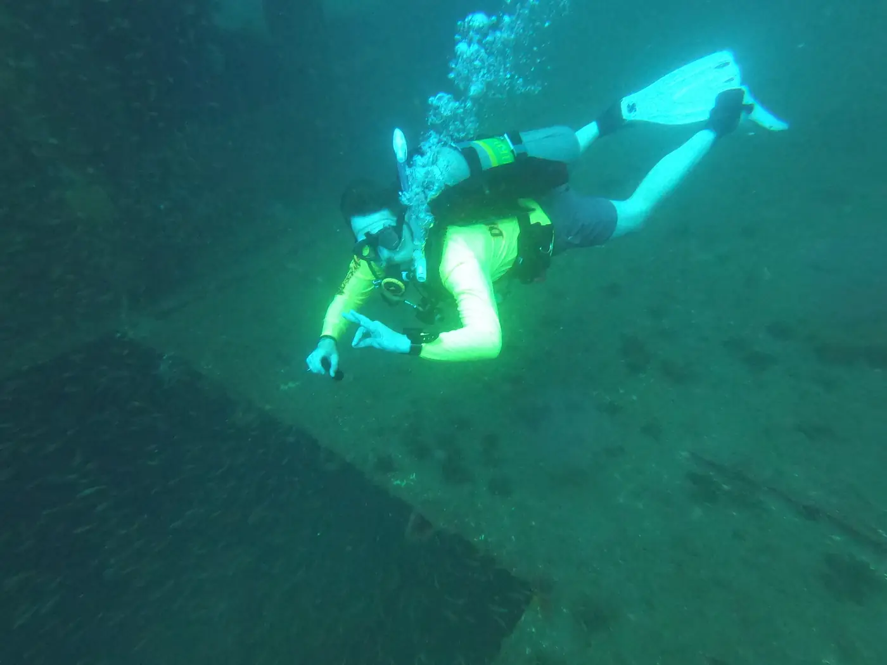
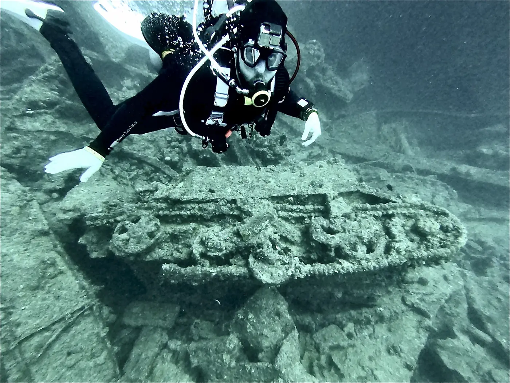
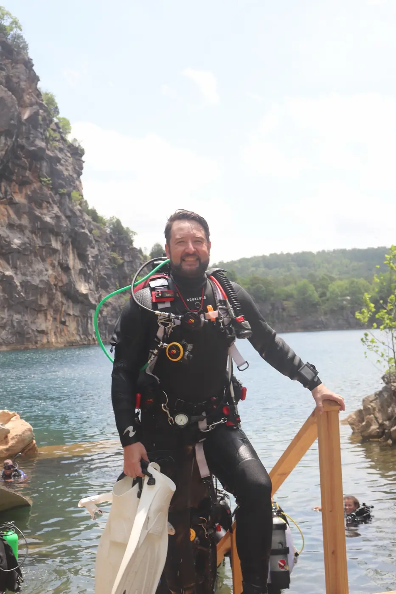
Founder & artist
Eric Doolittle
Eric draws the plates. Every wreck outline, contour line, depth marker and label on the back of a Doolittle Scuba shirt is his, drawn by hand.
The drawing has always been there. A leather journal from 2020 holds the bucket list he and Allie wrote together, every page hand-lettered and illustrated: an Alaskan cruise, a safari, scuba with sharks, the Great Wall, Fiji, the Maldives, the northern lights. Some of those are ticked now. The office door at work gets a new marker mural each season. In July 2024 the first dive-site sketches appeared, and those were the start of the plates.
The habit of labelling everything comes from work. By day he is an engineer at a utility, in a job built on root cause investigations, testing equipment against published standards, and the software testing and configuration behind it. A plate gets the same treatment: measured, labelled, checked twice, and not released until it is right.
His logbook runs from the Gulf wrecks off Panama City Beach to the hold of the SS Thistlegorm in the Red Sea and the walls of Rainbow Reef in Fiji. His left calf carries the record: a dive flag with the passport stamps of the places they have dived inked around it. The Thistlegorm was the first plate he drew. The rest followed, and the whole set went to the Copyright Office in one batch; Black Bart heads the list on the site only because B comes early in the alphabet.
After hours he builds things, and has since at least 2010, when the photos start with a breadboard and a seven-segment timer. Since then: a wired firing system and hand-built mortar racks for a backyard fireworks show, a dog couch upholstered from pallet slats, live-edge shelves on chain, a family sign hung from an antler, a table from two cedar slab cookies, foam board carved stone by stone into an aquarium stand and a reptile wall, a reef tank kept since 2013, a wall of twenty-five skull mounts with his signature laser-engraved into every leather pad, a lifted Silverado, drones and an FPV camera rig. And the big one, 2025: a worn-out EZGO rebuilt as the Queen Anne's Revenge, with a hand-drawn treasure map on the hood. All of it is in the workshop.
The plates are drawn in the same spirit. Start from a blank sheet, do it by hand, finish it properly.
- Rating
- PADI Master Scuba Diver
- Role
- Founder & artist
- Draws
- Every plate, by hand
- By day
- Engineer at a utility
- First plate
- The Thistlegorm, Red Sea
- Raised
- Augusta, Georgia
- Home port
- Newnan, Georgia
- After hours
- The Workshop
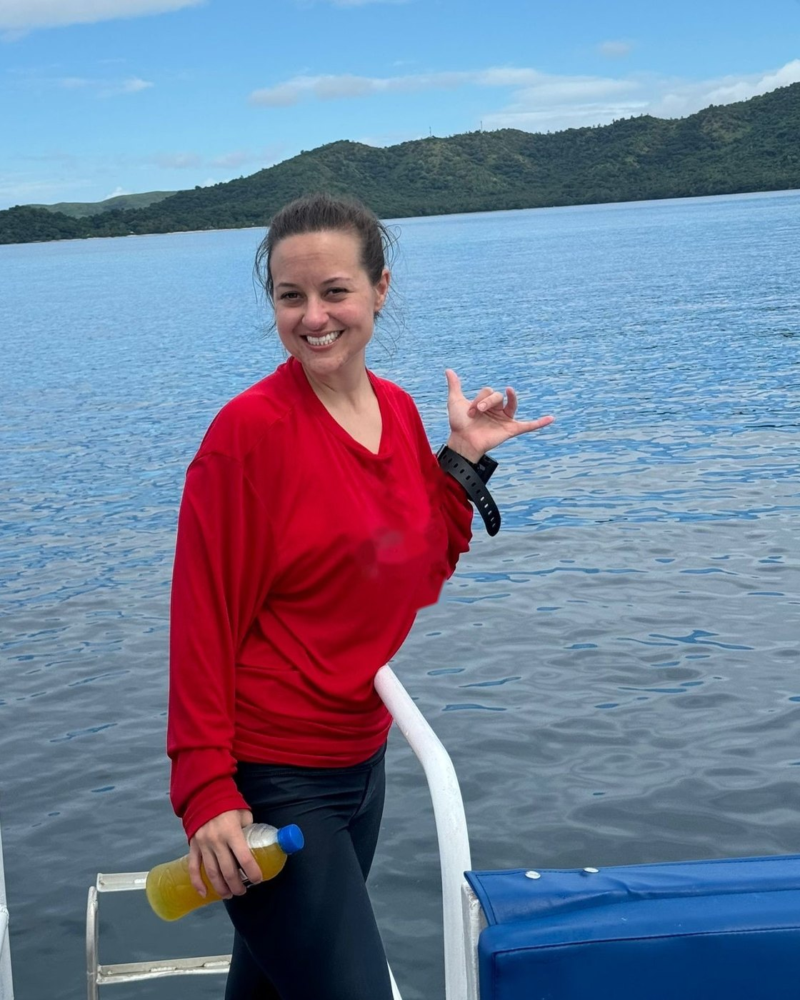
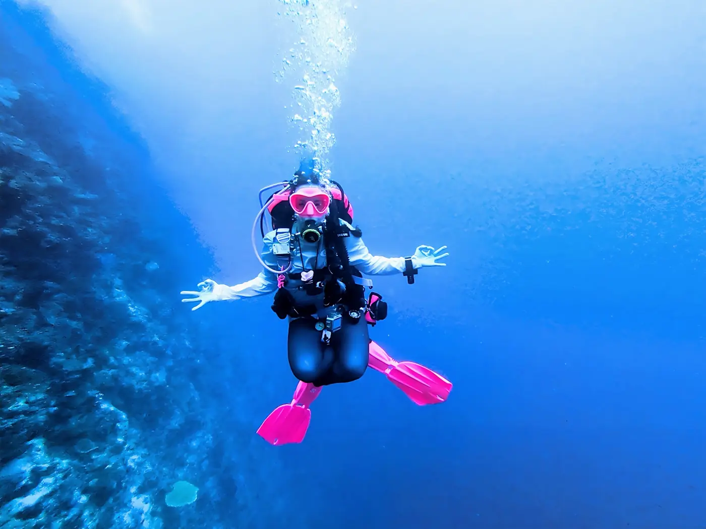
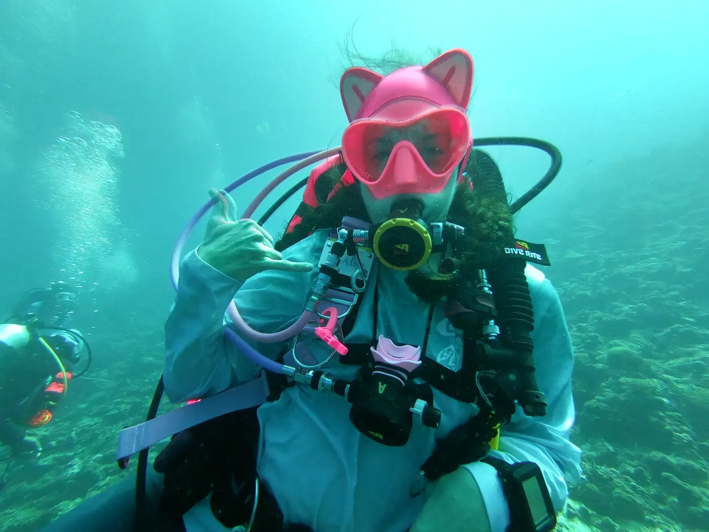
Operations Director
Allie Doolittle
Allie runs the business. Orders, stock, suppliers, shipping and the day-to-day that turns a drawing into a shirt all go through her, and nothing prints until she has signed off on it.
By day she is an accounts billing supervisor, so the numbers get checked as carefully as the depth markers. The same eye goes over every plate before it prints: the coordinates, the spellings, the depth that is off by a metre. Eric draws it; Allie is the reason it is right when it reaches you.
She dives in pink fins. At the Great White Wall in Fiji she gave the camera a shaka beside the soft corals; in the Red Sea she dived in a cat-ear mask hood. She holds the same PADI Master Scuba Diver rating as Eric, and the sites on the shirts are sites she has dived too, not just drawn.
If you meet her on a boat, she is the one with the business cards and the logbook stamp. Ask for both.
- Rating
- PADI Master Scuba Diver
- Role
- Operations Director
- Checks
- Every plate before it prints
- By day
- Accounts billing supervisor
- Fins
- Pink
- Raised
- Augusta, Georgia
- Home port
- Newnan, Georgia
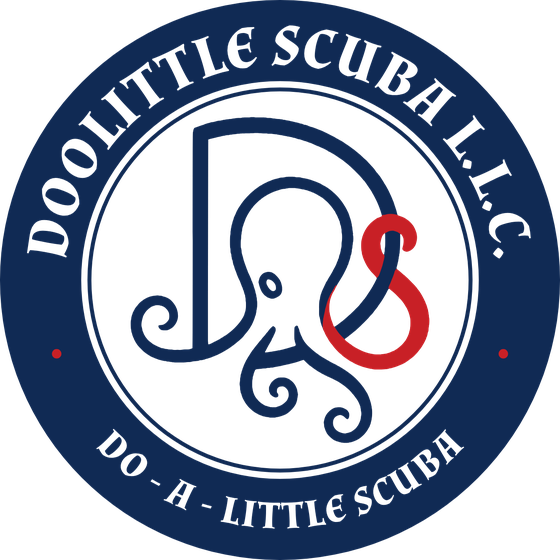
The name is a family pun we could not pass up: Do - A - Little Scuba. It is also roughly the advice.
See the designs